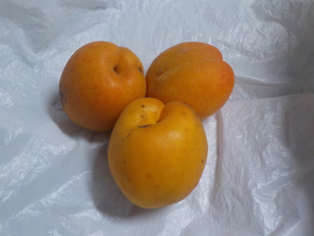
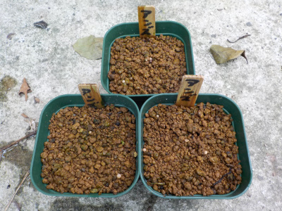
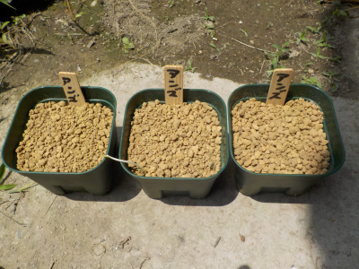
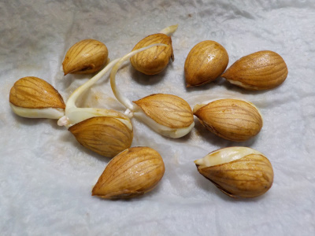
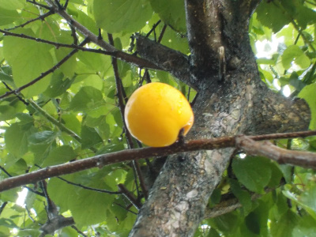
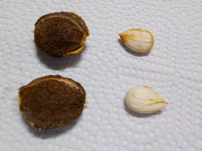
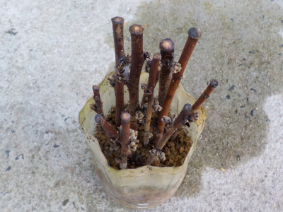
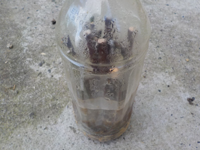
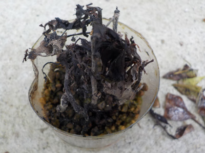

遊びで植物を育てよう
2021/06/13
アンズを食べました。

数が少ないので生で食べました。
あっさりとした甘さですが、アンズらしい味がして美味しかったです。
中に入ってる核を割ったら2個種が採れました。また種蒔きをしようと思います。
【アンズTOP】
【果物TOP】
【園芸TOP】
2021/03/14
アンズの花見をちょっとしました。

写真で見ると暗いですが、肉眼では明るく綺麗に見れました。
桜並木じゃなくてアンズ並木があればいいのにって思いました。
【アンズTOP】
【果物TOP】
【園芸TOP】
2020/08/09
アンズの芽が出ませんでした。

根っこがあるので芽が簡単に出るどろうと思っていましたが、出ませんでした。
なぜでしょうね。
鉢をひっくり返してみたら細い根っこが確認出来ましたが、他の部分はありませんでした。
虫に食べられたかな。
１本くらい生き延びて欲しかったな。
【アンズTOP】
【果物TOP】
【園芸TOP】
2020/06/28
アンズの種を植えました。

根っこが伸びたので、種を植えました。
梅雨で定期的に雨が降ると水やりが楽でいいんだけどな。
【アンズTOP】
【果物TOP】
【園芸TOP】
2020/06/20
アンズの種から根っこがでました。

先日採った種から、もう根っこが出ていました。
土に植えないといけないですね。
根っこが太いので、成長が速い感じがします。
【アンズTOP】
【果物TOP】
【園芸TOP】
2020/06/14
アンズの種はめちゃくちゃ硬かったです。

アンズが熟れてきたので、収穫して食べています。

食べた後に残った種ですが、殻を割って実を取り出しました。
殻が硬いため、力ずくで割ると爆発したみたいになり破片が飛び散りました。
中の種はアーモンドにちょっと似ていて、おいしそうでした。
この種を育てようと思っています。
【アンズTOP】
【果物TOP】
【園芸TOP】
2020/06/07
アンズの挿し木は失敗です。

全部黒くなりました。
もうちょっとしたら実が出来るので、今度は実生をやろうと思います。
【アンズTOP】
【果物TOP】
【園芸TOP】
2020/02/15
アンズの挿し木をしました。

剪定した枝を使って挿し木しました。
成功率は低いかもしれませんが、何度でもやるつもりです。
【アンズTOP】
【果物TOP】
【園芸TOP】
2019/09/23
杏子の挿し木結果です。
炭みたいになりました。

失敗です。
今度は3月に再挑戦するつもりです。
次はもうちょっと太い枝で挿し木をしようと思います。
【アンズTOP】
【果物TOP】
【園芸TOP】
2019/07/07
杏子の挿し木が汚くなっていました。
ペットボトルの中で腐敗してカビが発生しています。
見たくない状態です。
【アンズTOP】
【果物TOP】
【園芸TOP】
過去の記事
2019/06/23
ペットボトルで杏子の挿し木に挑戦。
2018/06/10
杏を収穫しました。
2017/03/26
杏子の蕾がふくらんできました。
2016/03/21
今年も杏子の花が咲きました。
2015/03/28
あんずの花は綺麗ですね。
2014/04/19
杏子に実が出来ていました。
2013/04/28
杏子の実生
2013/03/17
杏子の花が咲き出しました。
2012/07/28
アンズは枯れましたね。
2012/07/08
杏子の挿し木も挑戦。
【アンズTOP】
【果物TOP】
【園芸TOP】
アンズはコンポートで食べます。
【おいしいものを食べよう。】【しっかり寝よう。】
【ソロ活をしよう!】【季節感のあることをしよう。】【動画視聴はほどほどに。】【当サイトの全てのコンテンツは無断転載禁止です。】